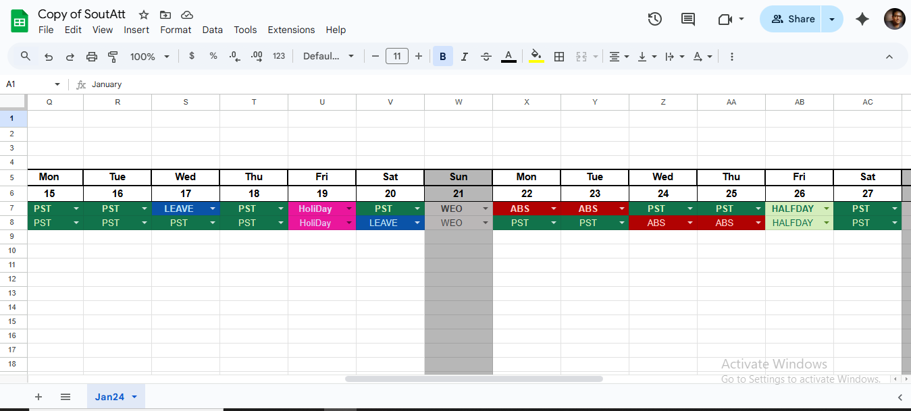
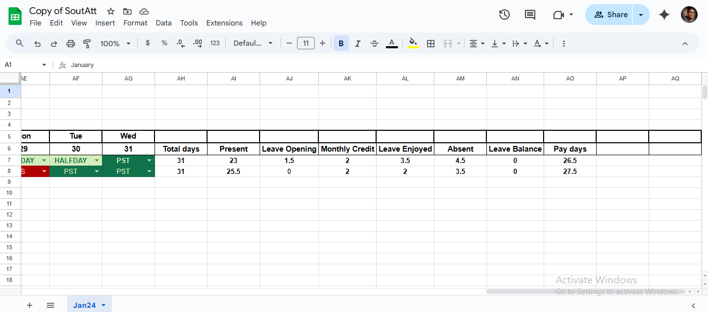

Attendance Tracker
A smart attendance management solution built with Google Sheets, Google Forms, and Apps Script automation. Designed for schools and businesses to track employee or student attendance with real-time reporting and notifications.
Features
- Attendance marking via Google Forms
- Daily and monthly attendance reports auto-generated in Google Sheets
- Email alerts for absentees using Apps Script + Gmail SMTP
- Role-based access for admins, teachers, or managers
- Graphical dashboards for quick insights
Screenshots


Technologies Used
Google Sheets, Google Forms, Google Apps Script, Gmail SMTP
Challenges & Learnings
The challenge was automating attendance tracking without external software. Learned how to integrate Forms with Sheets seamlessly and use Apps Script triggers for daily automation.